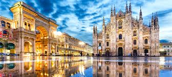
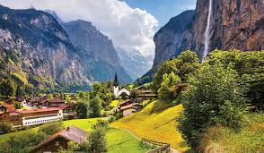

Traveling the world can be a dream of many individuals, but it isn't very possible to do. The world can come to your fingertips. Photography, art and famous historic artifacts you may want to learn and discover.
Italy is a very well-known country for its beautiful coasts, mountains, cities and food. Most of the country speaks a romance language called Italian and they also speak German. Pizza, spaghetti, pasta and garlic bread all originated from this beautiful luxurious country. One of the world's fashion capital is located in Milan, Italy. Rome is the capital of Italy.

Discover, understand and learn. Begin opening your mind to different places to see the world in a whole new perspective. See the world differently and watch everything change before your eyes.
This city is one of the most richest, largest and populated cities of the Middle East. Dubai is one of the most vacationed cities in the world. Finding things to do in Dubai isn't very difficult to accomplish. While in Dubai visit Burj Al Arab to look over the Persian Gulf in a tall glass curved building. Also visit one world's tallest skyscraper, Burj Khalifa, bring a parachute if you want to jump off which is also an activity to do at this location.
Cities are substantial to society. They give a feeling of fast movement and never being lonely. Smaller more rural environments gives the feeling of love and warmth. However, both of these places gives each and every one of us a sense of discovery.
Seattle is an American city located in Washington state. It usually has a climate of rainy and cloudy days, but it doesn't make this city any less interesting. In Seattle you can visit Seattle Center which is located downtown where you can see the Space Needle. The Space Needle was the tallest building to the west of the Mississippi River.
Switzerland is one of the most mountainous places of Europe. The country is considered one of the cleanest countries in the world. The beautiful sceneries of the rivers and mountains with the deep green valleys. The capital of Switzerland is Bern. The largest city of Switzerland, however, is Zürich. Places to visit while here in this country is Interlaken one of the many places of Switzerland you can view the mountains.

Copyright 2019© -Site designed by Asia Ford